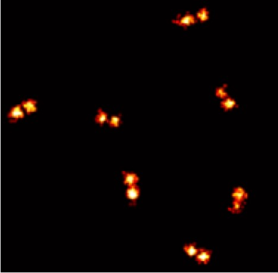
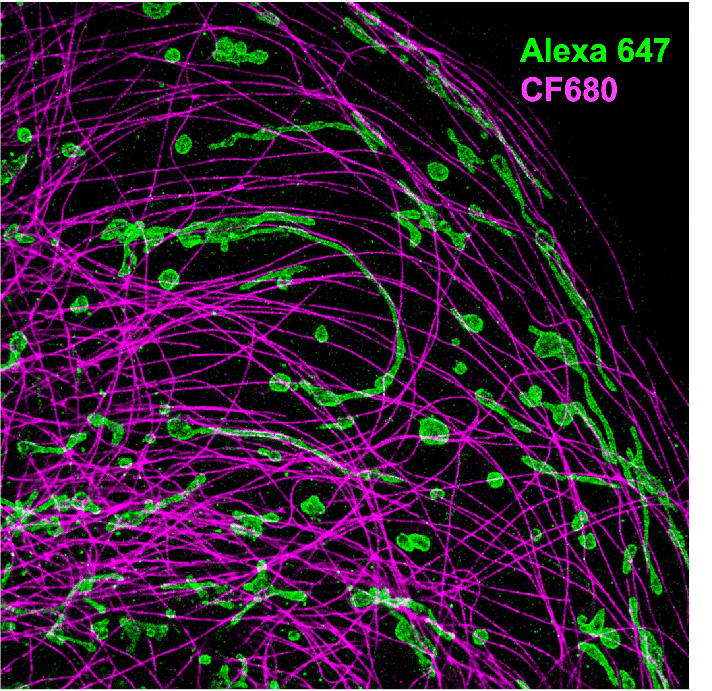
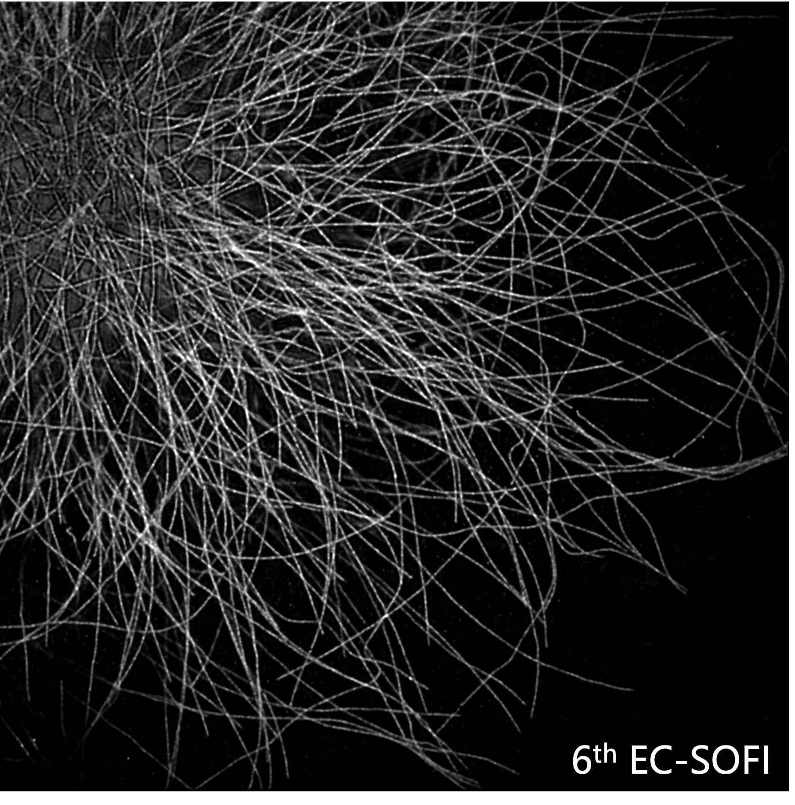
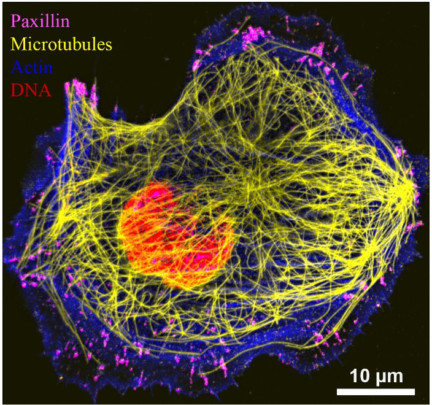

Fluorescence
microscopy
Methods for observing fluorescent signals with sensitivity and precision.
Professor · School of Physics
Electrochemically controlled fluorescence microscopy for more colors, finer structures, and deeper biological insight.

01 / About
My research explores new ways to observe, control, and understand fluorescence at fine spatial and temporal scales.
Ying Yang is a Professor in the School of Physics at Beihang University. She received her PhD in Chemistry from UNSW Sydney and subsequently continued her postdoctoral research there. Her research spans physical chemistry, biosensing, advanced fluorescence microscopy, fundamental electrochemistry, interfacial and surface chemistry, and super-resolution optical imaging.
Her current work focuses on the electrochemical control of fluorophore redox states and its application to microscopy, with an emphasis on electrically controlled fluorescence methods for multicolor and super-resolution biological imaging. She has published 12 first-author papers in journals including Nature Photonics, PNAS, Nature Communications, Accounts of Chemical Research, and Angewandte Chemie International Edition.
ORCID: 0000-0001-6009-474802 / Research
Developing optical and electrochemical approaches for clearer, richer views of biological systems.
Methods for observing fluorescent signals with sensitivity and precision.
Imaging strategies that reveal structures beyond the conventional diffraction limit.
Controlling and interrogating fluorescence through electrochemical processes.
Parallel imaging approaches for mapping multiple biological targets.
Research highlights

Electrochemical control of fluorophore blinking enables quantitative STORM imaging with tunable switching kinetics, reduced emitter overlap, and improved molecular counting.
Y. Yang et al., Electrochemically controlled blinking of fluorophores for quantitative STORM imaging, Nature Photonics 18, 713–720 (2024).

Electrochemical modulation accelerates and homogenizes dye switching, enabling faster and large-area super-resolution optical fluctuation imaging.
Y. Yang et al., Electrochemically controlled switching of dyes for enhanced superresolution optical fluctuation imaging (EC-SOFI), PNAS 122, e2425390122 (2025).

Electrochemical fluorescence response profiles distinguish spectrally overlapping fluorophores, expanding the multiplexing capability of conventional fluorescence and STED microscopy.
Y. Yang et al., Electrochemical fluorescence modulation enables simultaneous multicolour imaging, Nature Photonics 19, 718–724 (2025).
Selected Publications
HighlightsYing Yang, Yuanqing Ma · Angewandte Chemie International Edition
DOI: 10.1002/anie.202517001Ying Yang, Yuanqing Ma, Alexander Macmillan, Richard D. Tilley, J. Justin Gooding · Nature Photonics
DOI: 10.1038/s41566-025-01672-7Ying Yang, Yuanqing Ma, Richard D. Tilley, J. Justin Gooding · Proceedings of the National Academy of Sciences
DOI: 10.1073/pnas.2425390122Full Publication List
Verified recordsThe following publications were verified from public publisher and bibliographic records. Additional ORCID works can be added once a complete export is available.
Angewandte Chemie International Edition · 10.1002/anie.202517001
Accounts of Chemical Research · 10.1021/acs.accounts.5c00868
Nature Photonics · 10.1038/s41566-025-01672-7
Proceedings of the National Academy of Sciences · 10.1073/pnas.2425390122
Faraday Discussions · 10.1039/D4FD00111G
Biosensors and Bioelectronics · 10.1016/j.bios.2023.115467
04 / Team
We welcome curious minds interested in fluorescence microscopy, electrochemistry, and multiplex imaging.
Professor · Principal Investigator
[Name and role placeholder]
[Name and role placeholder]
05 / Contact
For research inquiries, collaborations, or opportunities to join the group, please get in touch by email or visit the academic profiles below.